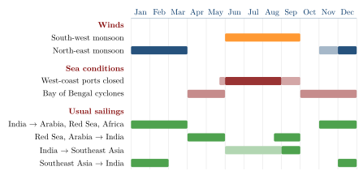

Chapter 14: The Monsoon and Navigation¶
Chapter Overview
The monsoon, the seasonal reversal of the winds over the northern Indian Ocean, set the calendar of every voyage in these waters until the age of steam. This chapter first describes the monsoon system in simple physical terms and the sailing seasons it imposed, from the Roman voyages to India to the trade of the medieval and early modern ports. It then examines the much-debated story of Hippalus, the weather lore of Sanskrit texts such as Varāhamihira’s Bṛhatsaṃhitā, and the picture of seafaring in Tamil poetry and Buddhist stories. The second half turns to the pilot’s craft: coastal pilotage, the star compass and the measurement of star altitudes, the uncertain history of the magnetic compass in the Indian Ocean, and the written pilot books of later centuries. Throughout, the knowledge described was shared by sailors of many coasts and faiths; it was neither invented by nor confined to any one people.
The navigational knowledge of the Indian Ocean was mostly practical and oral. It was learnt at sea, held in memory and passed from master to apprentice, and very little of it was written down before the fifteenth century, when Arab pilots began to compose systematic treatises. The evidence for earlier periods is therefore indirect: Greek and Latin accounts of the voyage to India, Buddhist and Tamil literature, the weather lore of Sanskrit texts, and the observations of travellers. These sources are thin, and they have often been over-read. What they show is impressive enough: generations of sailors, Indian, Arab, Persian, East African, Southeast Asian and Chinese, who learnt to use a powerful seasonal wind system to cross open sea on a regular timetable (Chaudhuri 1985; Tibbetts 1971; Pearson 2003). Astronomy as a science is treated in Volume 12, Khagola Jyotiṣa, and geography, maps and travellers’ accounts in Volume 21, Bhūgola.
14.1 The Monsoon System¶
14.1.1 Physical Basics¶
The word “monsoon” comes from Arabic mawsim, “season”, the term used by Arab sailors for the sailing season of a particular route; it passed into Portuguese as monção and from there into Dutch and English. It refers in the first place to a wind regime, and only secondarily to the rains that the summer winds bring.
In simple terms, the monsoon results from the different rates at which land and sea heat up and cool down over the year, together with the seasonal movement of the zone where the trade winds of the two hemispheres converge. In the northern summer the land mass of South and Central Asia becomes much hotter than the ocean, a broad area of low pressure develops over the north of the subcontinent, and moist air is drawn in from the ocean. Over the Arabian Sea this produces a strong and steady wind from the south-west, roughly from June to September, which is strongest off the coasts of Somalia and Arabia. In the northern winter the pattern reverses: the land cools, pressure rises over Asia, and dry winds blow from the north-east over the Arabian Sea and the Bay of Bengal, roughly from November or December to March. Between the two lie transitional periods of variable and lighter winds. The surface currents of the northern Indian Ocean reverse with the winds (Pearson 2003; Chaudhuri 1985).
The first scientific explanation of the monsoon as a thermally driven circulation was offered by the English astronomer Edmond Halley in 1686, and systematic observation in India began under the colonial government; the India Meteorological Department was founded in 1875. Modern meteorology has refined the picture considerably. For the history of seafaring, however, what matters is not the physical explanation but the practical regularity of the winds, which sailors of the region had understood from very early times.
14.1.2 Regional Differences and Cyclones¶
The monsoon did not affect all coasts alike. On the west coast of India the south-west monsoon blows straight onto the shore, with heavy seas and torrential rain. Most west-coast ports were open roadsteads or river mouths with bars, and from about the end of May to August or September they were effectively closed to shipping: ships were laid up, beached or sheltered in rivers, and long-distance arrivals and departures were timed to avoid the height of the monsoon. The east coast, on the lee side during the south-west monsoon, was more exposed during the north-east monsoon and the stormy weeks of October to December. Its ports were mostly open beaches where goods were landed through surf, which is why the frameless masula boat was developed there (Chapter 13).
Tropical cyclones occur in both seas but are more frequent and more dangerous in the Bay of Bengal, especially in the transitional seasons of April–May and October–December. The low, densely populated coasts at the head of the Bay are particularly vulnerable to storm surges. Sailors therefore avoided the transitional months where they could, and ports such as Nāgapaṭṭinam, Masulipatnam and those of the delta had their own seasonal rhythms (Arasaratnam 1994). Cyclones and storms appear in many accounts of shipwreck, from the Jātakas to the letters of medieval merchants, but there is no evidence that any pre-modern tradition, in India or elsewhere, understood their structure or could forecast them beyond the observation of local signs such as a long swell, a falling sky or a sudden change of wind.
14.2 The Sailing Seasons¶
14.2.1 The General Pattern¶
The monsoon divided the year into fixed windows for each route. In outline, ships sailed from India westwards to Arabia, the Red Sea and East Africa on the north-east monsoon, between about November and March, and came east to India on the south-west monsoon, either at its beginning (April–May), before the west coast closed, or at its end (late August–September). In the Bay of Bengal, ships from India to Southeast Asia sailed with the south-west monsoon or at its end, and returned with the north-east monsoon. Voyages that crossed both seas had to be divided into stages, with long waits for the wind to change. Table 14.1 and Figure 14.1 summarise the pattern; the exact dates varied with the route, the type of ship and the period.
| Route | Usual season | Wind and remarks |
|---|---|---|
| West coast of India to Arabia, Red Sea, East Africa | About November to March | North-east monsoon |
| Red Sea, Arabia to west coast of India | April–May, or late August–September | South-west monsoon, avoiding its height, when west-coast ports were closed |
| East coast of India to Southeast Asia | With or at the end of the south-west monsoon | Return with the north-east monsoon |
| Southeast Asia to India | About December to February | North-east monsoon |
| Coastal voyages | Fair-weather months | Many coasts closed at the height of the monsoon |
The consequences went far beyond navigation. Because a ship could make only one return voyage on a given route in a year, merchants had to wait months in foreign ports for the wind to change. They needed lodgings, warehouses, credit and agents, and over time this produced resident communities of foreign merchants in almost every port of the ocean, and the institutions that served them (Chapters 12 and 15). The monsoon also made ports at the junctions of wind systems especially valuable. Melaka in the fifteenth century, for example, lay where ships from the Indian Ocean and from the South China Sea could meet and exchange cargoes before the wind turned, a point made by the Portuguese apothecary Tomé Pires (Pires 1944; Chaudhuri 1985).
14.2.2 The Roman Voyage to India¶
The earliest detailed timetable comes from Roman Egypt. The Periplus Maris Erythraei (mid-first century CE) advises merchants bound for the mouth of the Indus, for Barygaza and for the pepper ports of the Malabar coast to leave Egypt around July (the Egyptian month Epeiph) (§§39, 49, 56). Pliny the Elder, writing in the 70s CE, describes the voyage in more detail: ships left the Red Sea port of Berenike in midsummer, reached Ocelis near the mouth of the Red Sea in about thirty days, and from there crossed to Muziris in about forty days with the favourable wind; they began the return voyage in the Egyptian month Tybi (December) or early in Mechir (January), with the north-east monsoon (NH 6.100–106) (Casson 1989; De Romanis 2020). A round trip thus took about a year, which fits what is known of the financing of these voyages from the Muziris papyrus (Chapter 11).

14.2.3 The Medieval and Early Modern Pattern¶
The letters of the Jewish merchants of the Cairo Geniza, written in the eleventh to thirteenth centuries, show the same rhythm on the route between Aden and the Malabar coast. Ships left Aden for India towards the end of the summer monsoon and returned in the early months of the year, and merchants who missed a sailing had to wait a year for the next one (Goitein and Friedman 2008; Margariti 2007). The Chinese fleets of Zheng He in the early fifteenth century likewise sailed from China in the winter with the north-east monsoon, waited in Southeast Asian ports, crossed to Calicut, and returned with the south-west monsoon (Dreyer 2007). When Vasco da Gama’s ships reached Calicut in May 1498, just before the closing of the coast, and then tried to leave in the late summer against the wind, the crossing back to Africa took about three months and cost many lives from scurvy; the Portuguese learnt the timetable the hard way (Subrahmanyam 1997).
14.3 Who “Discovered” the Monsoon? The Hippalus Question¶
The Greek and Latin sources name a single discoverer of the route to India across the open sea. The Periplus (§57) says that earlier sailors had made the voyage in smaller ships following the coasts, and that the ship’s captain (kybernētēs) Hippalus, by working out the location of the ports and the shape of the sea, first discovered the route across open water; a further sentence, which may be a later gloss, adds that the south-west wind of the region is called “hippalus” after him. Pliny (NH 6.100–106) uses “hippalus” as the name of the south-west wind that carried ships to India, without describing a discoverer (Casson 1989).
The story has been read in two opposite ways. Older European scholarship often treated Hippalus as the discoverer of the monsoon itself, as though the winds had been unknown before a Greek noticed them. The opposite reading, that the story was an attempt to take from Indian sailors the credit for a discovery that was theirs, is equally one-sided.
Debate: The Hippalus Question
What is certain. The people who lived on the coasts of the Arabian Sea knew the seasonal winds from the earliest times, as farmers and fishermen as well as sailors. Seaborne trade between the Indus region and the Gulf in the third millennium BCE, and the later trade of Arabian, Indian and East African ports, depended on that knowledge, although much of it may have been coastal (Chapter 11). The Periplus itself records ships from Barygaza and Ariakē sailing to the Horn of Africa (§14), and Strabo (2.3.4) tells how an Indian sailor guided the first voyage of Eudoxus of Cyzicus to India in the late second century BCE (Casson 1989).
What the Greek sources claim. The Periplus does not say that Hippalus discovered the winds, but that he discovered the open-sea route, which Greek-speaking sailors from Egypt then adopted, first from the mouth of the Red Sea and later more boldly. That is a claim about a change in the practice of Egyptian Greek sailors, and it may well be true in that sense.
What is debated. Some scholars have argued, from the wording of Pliny, that “hippalus” was first the name of the wind and that the pilot Hippalus was invented later to explain it; others accept him as a historical figure of the late second or first century BCE. The question remains open (Casson 1989; De Romanis 2020).
Conclusion. Neither name can claim the monsoon for one people. Indian, Arab and other sailors of the region did not need to be taught the winds, and Greek-speaking sailors from Egypt learnt to use them for direct crossings; both statements can be true at once.
14.4 Weather Lore in Sanskrit Texts¶
Sanskrit literature has much to say about rain and weather, but almost all of it concerns agriculture, not the sea. The Arthaśāstra (AŚ 2.24) states the amount of rain to be expected in different regions, measured in a standard vessel, and relates the success of crops to its distribution through the rainy season (Olivelle 2013). The fullest treatment is in the Bṛhatsaṃhitā of Varāhamihira (sixth century CE), an encyclopaedia of divination (saṃhitā) that devotes a group of chapters to the prediction of rain. It describes how clouds “conceive” (garbha) in the cool season, to be “delivered” as rain some six and a half months later; how rainfall is to be measured; how the conjunctions of the moon with the asterisms Rohiṇī, Svāti and Āṣāḍhā, and the direction of the wind on certain days, foretell the rains of the coming season; and which signs, including the behaviour of animals and the colour of the sky, announce immediate rain.
These chapters preserve careful observation of the sky and of nature within a framework of omens and astral correspondences. They are evidence of a long tradition of weather lore, closely tied to the farming year, that was shared with village almanacs and proverbs; similar traditions survive in regional agricultural calendars, such as the Malayalam calendar of ñāṭṭuvēla periods named after the asterism in which the sun stands. They are a divinatory tradition rather than a meteorology in the modern sense, and they are not a manual for sailors: nothing in them refers specifically to navigation. The astronomical background of the nakṣatra system is described in Volume 12, Khagola Jyotiṣa, and agricultural weather lore in Volume 15, Kṛṣi and Jīva Vijñāna.
14.5 Seafaring in Tamil and Buddhist Literature¶
14.5.1 Tamil Caṅkam Poetry¶
The Tamil poems of the Caṅkam anthologies, composed in the early centuries CE, are among the few early Indian texts that speak of the sea from the coast. In the poetic grammar of akam (love) poetry, the coastal landscape, neytal, is the setting of separation and anxious waiting, and many poems evoke the waves, the boats of fishermen and the absence of a lover gone to sea. Other poems name ships and ports directly. A poem of the Akanāṉūṟu (149) describes the well-made ships of the Yavanas (here, traders from the Roman world) arriving at Muciri on the Periyar with gold and leaving with pepper. A poem of the Puṟanāṉūṟu (66), addressed to the Chola king Karikāl, praises him as a descendant of a hero who sailed ships on the wide ocean and made the wind serve him; the line is often quoted as evidence of royal interest in seafaring, though its exact sense is debated. The Paṭṭiṉappālai’s port of Pukār, where horses arrived by ship, is described in Section 15.2.5.
These poems are conventional literature, not ships’ logs. They show that seafaring was a familiar part of the life and imagination of the Tamil coast, that the arrival and departure of ships followed the seasons, and that foreign traders were a visible presence in the ports. They do not describe navigational techniques.
14.5.2 Jātakas and Other Buddhist Texts¶
The sea stories of the Pali Jātakas, among them the Suppāraka, Mahājanaka and Bāveru Jātakas, are described in Section 11.5. For the history of navigation the most telling is the Suppāraka Jātaka, with its blind master mariner of Bharukaccha. Its seas are fantastic and the numbers of passengers in such tales are formulaic, but the stories show that the pilot was a respected figure and that a voyage was understood as a venture of great risk and great profit (Chakravarti 2002; Ray 1994).
One practical technique appears clearly. In the Kevaddha Sutta of the Dīgha Nikāya (DN 11), the Buddha uses the image of sea-going merchants who release a “land-sighting bird” from their ship when they cannot see land: the bird flies in each direction, and if it finds no shore it returns to the ship, while if it sees land it does not come back. Pliny says the same of the sailors of Taprobane (Sri Lanka), who, he writes, did not steer by the stars but carried birds which they released to find the direction of land (NH 6.83). The practice is known from other ancient seafaring cultures as well, and it is a reminder of how much early navigation depended on reading nature rather than instruments.
14.6 Pilotage and Coastal Knowledge¶
Most voyages, even long ones, involved long stretches of coastal sailing, and the most dangerous moments were usually the approach to land. The Periplus gives a vivid account of the difficulties at Barygaza: a narrow and shoal-ridden gulf, rocks and banks at the entrance, and very strong tides with a tidal bore in the river. Fishermen in the service of the king went out in the boats called trappaga and kotymba as far as the coast of Saurashtra to meet incoming ships and pilot them up the river (§§43–46). These were local pilot and towing boats, not ocean-going ships, and they show that local pilotage was an organised service under royal control. The same text notes that sailors approaching the coast near the mouth of the Indus knew they were close to land when they saw sea snakes coming up from the deep (§38) (Casson 1989).
The signs that pilots used to know their position near land are familiar from all pre-modern seafaring: the colour of the water and its change from blue to green over shallower ground; floating vegetation near river mouths; the flight of seabirds; the character of the swell; clouds standing over islands and high coasts; and, above all, soundings. A lead line, with a cavity filled with tallow to bring up a sample of the bottom, told the pilot both the depth and the kind of seabed, sand, mud or shell, which an experienced pilot could match to known stretches of coast. Knowledge of local tides and currents, of the landmarks visible from the sea, and of the seasons when particular harbours were safe was the pilot’s stock in trade. Little of this was written down before the fifteenth century, but it is implied by the regularity of the trade in every period and described in detail in the later pilot books (Tibbetts 1971; Hourani 1995).
14.7 Stars and Instruments¶
14.7.1 Steering by the Stars¶
For crossing open water, pilots relied on the stars. The most fully documented system is that of the Arab pilots, set out in the treatises of Aḥmad ibn Mājid of Julfar, whose Kitāb al-Fawāʾid fī uṣūl ʿilm al-baḥr wa-l-qawāʿid was completed around 1490, and of Sulaymān al-Mahrī in the early sixteenth century. These works were translated and analysed by G. R. Tibbetts (Tibbetts 1971). They describe a “star compass” in which the horizon is divided into thirty-two points named after the rising and setting points of fifteen prominent stars, together with the Pole Star and the opposite pole. A course was given as the rising or setting point of a particular star. Distances were reckoned in units of sailing time, and positions north and south by the height of stars above the horizon.
Star altitudes were measured in “fingers” (Arabic iṣbaʿ), a unit of a little over one and a half degrees, originally the width of a finger held at arm’s length against the sky. The height of the Pole Star, or of other stars when it was low or invisible, gave a measure of latitude, and a pilot who knew the star height at his destination could sail north or south until he reached it and then run along that parallel, east or west, to make his landfall. South of the equator, where the Pole Star cannot be seen, other stars were used, among them Canopus, known in Sanskrit as Agastya and in Arabic as Suhayl.
Ibn Mājid regarded the knowledge he set down as the inheritance of earlier pilots, whom he names, and of practice on many coasts. The system was shared by the pilots of the western Indian Ocean whatever their origin, and Gujarati, Malabari and other Indian pilots will have used the same or similar methods. No early text, however, describes a separate Indian star-compass system. The nakṣatras of Indian astronomy are divisions of the ecliptic used for the calendar and for astrology (Volume 12); sailors doubtless knew and named stars in their own languages, but no early text describes how Indian sailors used them at sea.
14.7.2 The Kamal¶
The instrument known in English as the kamal was a small rectangular board with a cord attached to its centre (Figure 14.2). Holding the cord in his teeth and the board at arm’s length, the pilot set the lower edge on the horizon and the upper edge on the star; knots on the cord, set at known distances, corresponded to known star heights, for example those of particular ports. It was used by Arab, Indian and other pilots of the western Indian Ocean, and examples were still in use in the nineteenth century. Its origin and date are uncertain; it probably developed from the older practice of measuring star heights with the fingers, and its early history cannot be traced in detail (Tibbetts 1971).

14.7.3 The Magnetic Compass and the “Matsya-yantra”¶
The magnetic compass was first used for navigation in China. The military compendium Wujing zongyao (1044) describes a “south-pointing fish” of thin iron, magnetised by heating and cooling, floated on water. A work written in the early twelfth century by Zhu Yu, describing the port of Guangzhou around 1100, says that pilots steered by the stars at night and the sun by day, and in overcast weather consulted the south-pointing needle. In the Islamic world the floating needle is described in the thirteenth century, and Arabic and Persian writers of that century speak of a magnetised iron leaf or hollow iron fish floated in water; one of them, Baylak al-Qibjāqī, writing in 1282, says that this fish form was used by the captains of the Indian Ocean. By the fifteenth century the compass was a standard part of the Arab pilots’ equipment, alongside the star compass whose names it took over (Tibbetts 1971).
Scholarly Note: The “matsya-yantra”
Radhakumud Mookerji’s Indian Shipping stated that Indian sailors used a magnetic compass called the matsya-yantra (“fish machine”), an iron fish floating in oil (Mookerji 1912), and the statement has been widely repeated since. No securely dated Sanskrit text describing such a navigational instrument has been identified. It is quite possible that floating iron fish of the kind described by Chinese and Arabic writers were used on ships sailing to and from India in the thirteenth and later centuries, but nothing shows that the device was invented in India, and the term matsya-yantra itself is not attested in any early source known to us. The claim remains unproven.
14.8 Pilots and Pilot Books¶
14.8.1 The Pilot and his Knowledge¶
On the ships of the western Indian Ocean the pilot (Arabic muʿallim, “master”, which passed into Indian languages as mālim or mālmī) was a specialist distinct from the ship’s master (nākhudā). Pilots were hired for particular routes, and their knowledge of a coast, its seasons and its dangers was valuable and often guarded. Gujarati pilots were well known in the trade between India, Arabia and East Africa, and pilots from the Malabar coast, the Konkan, the Maldives and the Lakshadweep islands worked on their own regional routes. In many cases navigation was a family occupation, and the communities of Kutch, Lakshadweep and other coasts that preserved it into the twentieth century are described in Chapter 17.
Ibn Mājid’s and Sulaymān al-Mahrī’s treatises, written in Arabic verse and prose, were partly composed in verse so that they could be memorised. They give sailing directions for the whole western Indian Ocean, from East Africa to the coasts of India and on to Southeast Asia, including detailed instructions for the Indian coasts. Some of their content was later incorporated in the Ottoman admiral Seydi ʿAlī Reʾīs’s work on the navigation of the Indian Ocean, written in Gujarat in the 1550s (Tibbetts 1971). Ibn Mājid’s works are the best guide we have to the practice of the pilots of his time.
14.8.2 The Rahmānī of Gujarat and Kutch¶
The navigators of Kutch and Saurashtra kept written pilot books, known as rahmānī (from Persian rāhnāma, “book of the road”; the Arabic pilots used the related term rahmānaj). The surviving examples are manuscripts in Gujarati or Kachchhi, mostly from the eighteenth to the early twentieth century, kept in navigators’ families. They are reported to contain sailing directions for routes to the Gulf, Arabia, East Africa and along the Indian coasts, with courses expressed by the points of the star compass, star altitudes, soundings and descriptions of landmarks. They are thus late representatives of the same tradition as the Arab treatises, adapted to the needs of the Kutch sailors and written in their own language. They are valuable historical documents, but they have been little studied and few have been published, and nothing yet shows the genre to be older than the Arab pilot books from which it borrowed its name.
14.8.3 Vasco da Gama’s Pilot¶
The best-known pilot in the history of the Indian Ocean is the one who guided Vasco da Gama from Malindi on the East African coast to Calicut in 1498, a crossing of about four weeks in April and May. The Portuguese sources describe him only briefly. Later Portuguese chroniclers call him a Gujarati, and one gives his name as “Malemo Caná”, in which malemo is the Arabic muʿallim, “pilot”. In the sixteenth century the Arabic chronicler Quṭb al-Dīn al-Nahrawālī claimed that the Portuguese had been guided by Aḥmad ibn Mājid, whom he blamed for opening the ocean to them; this identification was popularised in the twentieth century by the French orientalist Gabriel Ferrand and is still often repeated. Modern historians reject it: Ibn Mājid would have been an old man by 1498, nothing in his own writings or in the Portuguese sources supports the story, and it belongs to the legend that grew up around the voyage (Subrahmanyam 1997). The pilot is best described as a Muslim pilot of the western Indian Ocean, probably from Gujarat, provided by the ruler of Malindi. The episode illustrates the point of this chapter: the route the Portuguese “discovered” was one that Asian pilots sailed every year.
14.9 Charts and Maps¶
No pre-modern Indian sea chart survives, and there is no evidence that Indian pilots used charts before contact with Europeans. Arab pilots before the sixteenth century relied above all on their written directions and their star compass; no Arab sea chart of this period survives, and how far pilots used drawn charts at all is uncertain (Tibbetts 1971). Portuguese sources of the early sixteenth century do mention maps in the hands of Asian pilots, most famously a large Javanese map that Afonso de Albuquerque had copied in 1512 and that was later lost at sea, but none has survived from the Indian coasts. Indian cartography, including the regional maps of the seventeenth and eighteenth centuries, is discussed in Volume 21, Bhūgola.
14.10 Conclusion¶
The monsoon made the Indian Ocean one of the great highways of the pre-modern world, but it also bound every voyage to a strict calendar. Sailors of all its coasts learnt to use the seasonal winds, to read the signs of land and weather, to steer by the stars and to measure their height, and in time to use the magnetic compass. The knowledge was practical, oral and shared; Indian sailors contributed to it and drew on it, as did Arab, Persian, East African, Southeast Asian and Chinese sailors. The surviving texts, from the Periplus and the Jātakas to Ibn Mājid and the Kutch rahmānīs, reveal a world of skilled specialists whose knowledge, built up over many generations, made long-distance trade possible.
Further Reading¶
Chaudhuri (1985) and Pearson (2003) explain the place of the monsoon in the economic history of the Indian Ocean. Tibbetts (1971) is the essential study of Arab navigation and includes a translation of Ibn Mājid’s Kitāb al-Fawāʾid; Hourani (1995) covers the earlier period. For the Roman voyage see Casson (1989) and De Romanis (2020); for the Geniza merchants and their sailing seasons, Goitein and Friedman (2008) and Margariti (2007). Subrahmanyam (1997) discusses the voyage of Vasco da Gama and the legend of his pilot.